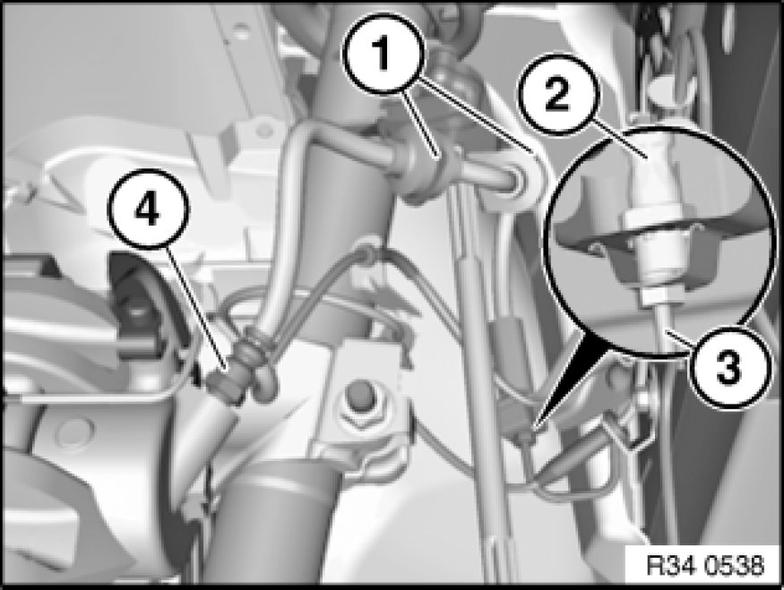

34 32 881 Replacing Front Left or Right Brake Hose
34 32 881 - Replacing front left or right brake hose

Note:
- Read and comply with General Information Service and Repair.
After completing work: Bleed braking system 34 00 025 Replacing Fluid In ABS/ASC+T Brake System

Press clutch pedal down to floor and secure with pedal support.
Note:
The pedal support may only be released when the brake lines are reconnected.
This prevents brake fluid from emerging from the expansion tank and air from entering the system when the brake lines are opened.

Pull brake hose out of both holders (1).
Important!
Grip brake hose at square head (2) so that connecting piece cannot rotate in retaining bracket.
Detach brake hose from brake line (3).
Installation:
Tightening torque 34 32 1AZ 34 32 Brake Lines.
Detach brake hose from brake caliper (4).
Installation:
Tightening torque 34 32 2AZ 34 32 Brake Lines.

Important!
First tighten brake hose on brake caliper.
Move wheels into straight-ahead position.
Insert brake hose in bracket and screw onto brake pipe.
Never twist brake hose when installing it and avoid all contact with parts attached rigidly to the body.